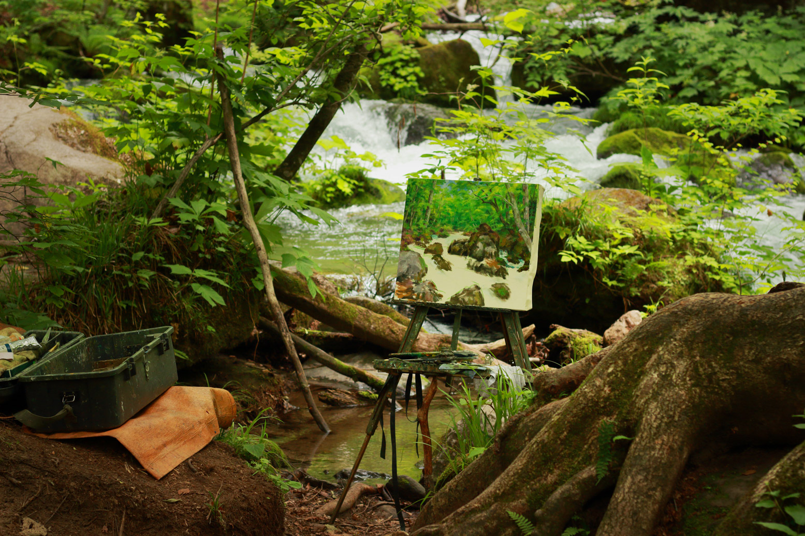

Japan : A Bullet in Time
June 13th - July 3rd
I fell in love with Tokyo three years ago, with the yellow taxis, the glow of Shibuya, the reds of Asakusa, and the $2 bike rental at Yoyogi park. It was the first time I travelled in Asia, and though I was much worse a traveller, Japan did not fail to woo and win me. And after growing much deeper roots in Asia than I ever thought I would, coming back to Japan for the third time still felt somehow a world apart, and yet, like coming home at the same time. Japan has changed me every time I brushed past its whiskers, and every time the rush comes back- so too does the shudder. St Pierre’s, Sushi Station, Wasabi, and whatever else the Dunedin scarfies ate, already died after the first Japan trip. Would Jizo, serving $8.50 smoked salmon maki on black tables, stand the test of time to ease my Saturday weltschmerz, or will I have to make a reservation in Ginza for 2020? In many ways Japan is my favourite poison; the dream and disenchantment in one. And like a great love in life, I can’t hate it even if I can’t have it.
Yoyogi Koen, January 2015. I still wear those pants , and have pimples on the same spots of my cheeks. But I was skinny when I first came to Japan. I never recoverd after I left.
So here it is, a rant to hopefully cast doubt on your reality. If you haven’t been to Japan- why the fuck not? Why haven’t you been to a place that will fatten, spoil, and ruin you forever? From Hiroshima to Furano, here's a hungry look back to three weeks of dancing to Plastic Love on shinkansen, pant popping feasts, and midsummer daydreams.
Kyoto
Nishiki market
Because I loved the traditional shop fronts and retro buildings of Asakusa so much, my first and longest stop this time had to be Japan's cultural capital. The city is packed; there were queues spilling out the doors of fast turnover kaitenzushi, tour groups and locals alike, pilling up temple stairs to drink lucky water, and alleys of one-man-breadth opening into five doors, framed by lanterns with izakaya names painted on them. But Kyoto is big enough to handle the influx of consumers without losing sight of its charming brand.
Torii at Fushimi Inari.
While it's true that many of the city's sights, such as Fushimi Inari , Arashiyama , Ninenzaka and Sannenzaka have become so saturated with tourists that they feel more like souvenir markets or photo booths, there are still the roots of vibrant local life and culture woven in the chaos. Anywho, it's not like I, myself, didn't come here with a thirst for insta-worthy cultural appropriation.
Cultural narrative appropriation: Tran-san. 39, two kids in high school and middle school, running ryokan full-time in Arashiyama.
After over-indulging on endless pickle samples and skewers at Nishiki market, or leaping through time at the Manga Museum to the forgotten days when I drew panels of shit-soup-stirring characters, or clunking to stations in geta sandals and, wrapped at the knees by a yukata, missing trains, my favourite time of day was when it began to end. With no one around to impress, my bum-trait of staying in bed til 11 meant that I started my day in the growing June heat, competed to out-tour other tourist in the afternoon, and then woke up by five to revel in all the shops and temples closing. The tour buses disappear, and the golden hour dawns on the walk back from temples, on children picked up from school, and office walkers pacing along the trickle of water next to green paths.
When I was in school, this time of day made me feel strange and empty. I would sit in damp smelling buses winding past houses with chimneys beginng to breathe. I hated the quiet of that time, when cars pulled into their driveways and I was carried away, waiting for my life to begin.
And years later, in downtown Kyoto catching blurry faces on passing buses, and seeing school kids eating ice-cream after baseball practice, I felt wistful in the breeze. The mundane everyday I survived through now looked so fascinating from tourist-coloured lenses.
# Travelling brings all the hopeless romantics to the yard.
I really thought that I unlocked the 'authentic' tag for the street photos when I stumbled into a moments finding no other tourist in peripheral. And then my landlord, driving me to the station the next day and, told me he hadn't been to Gion in 20 years. He lives 15 minutues away. In the spirit of cultural immersion, I tried the local life and ate at the udon shop around the corner from the apartment. The menu was paper strips on the wall and they panicked when I had the audacity to ask for an English menu. I realised I never had to ask for the bill in Japanese before.
Despite having to accept pretty early on that there was no way to truly understand a country in whose language I knew only "I don't need a bag", and that most life existed outside the English-friendly zones, the tourist life was still magical, with Kyoto as its best spokesperson.
There is no shortage of fine dining in Kyoto, but reservations and big bucks can be just out of reach. Nevertheless, I had some of my best meals here at cheap finds from random walks and the dusty Rough Guide in my apartment. A few recommendations:
-
Tezukurikobo Kyozuan Kyoto Fushimi Inari. I had around 20 ice creams in Japan, and none blew my mind like the tofu soft serve here. I would go to Fushimi Inari just to eat this. Don't go half/half with fruit gelato- the gelato will taste watery in comparison. Soy has never been this thicc.
Honke Owariya. What I want my afterlife to look like. A beautiful traditional house with a little zen garden, tatami flooring, and the best soba. Only 10 dorra for smooth noodles at the perfect temperature and with just enough bite, paired with sweet and bonito-smoky sauce.
-
Anzukko. Cosy dumpling shop. They even had a 'solo' set menu for me as I eavesdropped on someone else's first date. Though the classic pan fried gyoza is solid here, the highlight of Anzukko is all the other intersting flavours, like yuzu or ume-shiso.
Hiroshima & Miyajima

I picked up my two week JR pass and began my shinkansen days snaking up Japan, with Hiroshima as the first stop. The population here is not much smaller than Kyoto's, but the city on islets with big roads and generous bike lanes felt a world away. I stayed just across the Enko River at Yukako's Airbnb (she was so cute she even gave me a lemon cake when I left), which comes with bikes, and together with my new friends Eric and MJ, I glided across the bridge, sunnies on, filming wannabe travel vlogs.
I didn't know anything about garden philosophy, but managed to have the best one hour field trip at Shukkeien with Mr Koyama, a retired engineer who volunteers at the garden as a tour-guide. I learnt to see the white dragon in the water cascade, the strategic orientation of tea houses for the king to view the moon or autumn leaves, and also 3 big trees that survived the atomic bomb. One of them had its slant changed by 90° by the nuclear wind; another, hidden in one corner overlooking the river, was sizzled right in the trunk- "bacon", as Mr Koyama called it. And from the sides of that tree, branches spawned and green leaves still wave 70 years post-frying.
Other than trying the iconic Hiroshima okonomiyaki, challenger of its Osaka cousin, perhaps at the popular Nagata-ya, Hiroshima is Japan's oyster capital, and there's plenty of cotton-candy anago (salt water eel) to try instead the more famous fresh water unagi.
Sushi set with anago, missing the squid because I gave into short-term desires.
Miyajima low tide.
As the Nagarekawa night life, I of course surveyed the nocturnal animals. On a Monday night, the city was alive: business people out drinking, uni students in hysterical laughter carrying a semi-conscious friend away, all walking alongside the stream of endless taxis. I circled alleys, found nothing nasty as the Dunedin scene, bought two onigiri from a rice shop open at 11, and sped home on hot wheels to watch TV. Japan has something for everyone.
Onomichi & Shimanami Kaido
After marvelling at leafless winter branches and giant crows of Yoyogi Koen on a 30 minute impromptu bike rental three years ago, I rediscovered my no. 1 chilhood love. The infant days of rolling down the driveway canopied by fragrant thiên lý vines on four, and then two wheels, were my best memories. Since the lucky encounter in Japan, I often schedule a half day bike ride on my trips, and this time, on a long and solo trip with no one to piss off, I could not pass up the chance to take two days to cruise the 70km Shimanami Kaido course, which runs from Onomichi to Imabari, crossing six islands on the Seto Inland Sea. Since I didn't quite get the chance to island hop in the Philippines since I was busy losing my phone and getting stranded at sea, I hoped this would be the idyllic sun kissed getaway.
Alas, my sunny days had run out in the rain season and I arrived to a drizzling gray Onomichi station with a bursting suitcase and realised that I picked the farthest hostel up the hill.
My mood is weather dependent and rainy cold days (ie 98% of New Zealand winters) have always been a dramatic time for me where I wish to lie down for periods of 7 hours straight and not acknowledge the world. But Onomichi actually changed my mind.
After shipping my nasty suitcase off into the magical portal of takuhaibin delivery service, I warmed up to the drizzle by sending postcards written in Kyoto with the lingering memory of affternoon tea and strawberry shortcake by the window. Things got really heated after that with a bowl of thicc sailor's ramen at Ramen Shop Syukaen. Straight manly flavour, full grease with oily skin and chunks of fat to keep you warm at sea/night. The sinful consumption was followed by a cold shower on the streets to admire the Path of Literature . Even while lacking in education of the cultural history of Onomichi as a creative muse, it would be wilful blindness to claim that this port city shouldered on a mountain is anything less than devastatingly charming. There is a nostalgic beauty in the old town- in the faces of the houses on the hill, in the pot plants and clutter lining little shops, in the velvet booths of orange-lit western style cafes and eateries, and in the red rust.
The Senkoji Ropeway
A dismal skyline from the top did not bar weird and wonderful discoveries on the ground. Ushitora Shrine whispered to me that I needed a favourite tree in my life and that it would be one of the giant camphor trees in front of the shrine. And then I saw one, then two, and more, cats. And then I even found a Ghibli-esque Cat Alley.
This week on Asia's Next Top Models...
Shit times can only get better, and serendipity has never rained down harder than on the Shimanami Kaido. The day started with a dry croissant and the bike hire staff laughing at my "kodomo" helmet choice, and ended with a total of three flings off the bike. The rain wasn't always kind, but in its capriciousness was the awe of moments fleeting. I would stop on top of bridges, my cheeks aflame and hair wild from the climb, and breathe in the cutting cold. The drum of my chest was silenced watching the mist rise like incense from green hills of bamboo. And so there was the sun kissed holiday, the enigmatic glow, the rural candidness, wild plums, and of course a single young man sitting on the sunset eating yakisoba from a plastic container. Everything I could ask for, born from the clouds and back into them.
As much Onomichi and the islands made it into Top 10 Slice of Life Anime, Akira and Rie's Guesthouse Yadokari on Oshima Island really hit home the Barakamon-esque lifestyle I never knew I needed. I loved the house with backyard beach, the electric purple sky, and the One Piece sliding walls Akira made himself. I loved steaming in the steel bath after a long day, reading manga in the futon under the pull cord lamp and sucking on biwa fruit. As the authentic rural life goes, nothing is open after 7pm and a fridge raid led to instant curry and beer with my swanky housemate Yukie who is a rogue law graduate living her better life as a freelance percussionist chillin on Chet Faker tracks.
The island day had left me smitten and when I apologetically told Akira and Rie I had to leave the next day to Takayama, and after asking which prefecture that was even in, they told me that I was "so crazy".

Yoshiumi Rose Park. Delicious specialty rose and salt ice creams.
Kanazawa & Takayama
I'm afraid I really don't know how "hype" works because the second half of the trip's sights did not top the first. Maybe I just couldn't recover from my island life widthrawals but Kanazawa and Takayama and became similar (and perhaps because I found them similar) less exciting versions of Hiroshima and Kyoto.
I liked the Kanazawa machinori bike-sharing but didn't bother to try any of the pricey famous gold leaf food. Kenrokuen is cited in many guides as the best garden in Japan, but without my dear Mr Koyama, and many more tourists, my soul did not find the same peace. My favourite aspect of the city was definitely its stylish and modern side. The 21st Century Museum of Contemporary Art was showing Christine Ay Tjoe's Spirituality and Allegory collection and it blew my mind for the next few days. It was definitely the kind of modern art that was palatable for a non-gold-leafed brute like me: cool pastels muddied by violent reds, like storms brewing on canvas, yet always precisely contained to preserve balanced composition. The hot kind of mess.
We Are Getting Highly Overrated Because You've Never Known Us 01 (detail)
©Ay Tjoe Christine, courtesy of Ota Fine Arts. Taken from the 21st Century Museum of Contemporary Art website.
The shopping streets nearby the museum also stocked acceptable $300 Italian cardigans, desginers brands who you can smell 5 meters away on split toe boot footprints, and delectable skater boys smoking outside coffee shops.
Takayama for me was a smaller Kyoto with its many bridges, but not necessarily cuter. It was more sparse in terms of attractions and grammability, and though smaller, was nevertheless relatively saturated with tourists. I did enjoy the cooler weather, learning about roofing from the houses in the Hida no Sato open-air museum, and ultimately ODed on Hida-gyu, but I would not reccomend putting Takayama in the same itinerary as Kyoto.
Aomori
Capturing the Oirase stream.
I can't recall exactly why I wanted to stop in Aomori beyond wanting to a few eat apple pies and maybe going biking again, but long story short, I didn't end up biking, ate 3 apple pies, spilled yeasty apple cider in my room and made it smell like vomit (yiKeS), nearly threw up on the gnarly bus ride to the Oirase stream and lake Towada (rAgREtS), and stumbled upon the izakaya of a lifetime.
Izakaya Fukuro was my late-trip experienced-diner coin toss, a stone throw away from my inn (ie it was late and I was too tired to research, and this was the closest place with unreliable 4+ stars rating Google maps). I only sweated for 5 minutes before telling them I would eat anything since there was no Eigo no menu. The battle to order food would simmer out to a quiet dinner, I thought, but soon enough it was midnight and I was still at the bar sipping on sweet Hirosaki sake and gossiping via dictionary with the chef and a Japanese literature professor aka "two crazy grandpas". Both were in their youthful 60s, and the prof was on his yearly solo road trip north, all the way from Tokyo.
"Why do you come to Aomori? Me, I come for here."
Google ratings are flaky af, but let it be known that Izakaya Fukuro's 4.2 stars on Google has been verified by yours truly. While they don't get enough foreign tourists to even bother with an English menu, the name sits proud in many Japanese izakaya guides. We even watched a TV episode of when a famous izakaya critic visited 7 years ago, and the chef did not age one bit except for where his shirt said 'LOVE IS THE WAY' then and now it said 'NO MORE LOVE'.
Trying something a little strange ie hoya or sea pineapple. The Japanse pineapple fantasy continues.
Ironically, the language barrier also broke down formalities and I found myself thinking long after on how strange and wonderful it was to exchange candid thoughts with people who were nearly 2 generations above me. We talked about Hiroshima, crime in Japan, Chinese tourists, and they dispelled some common cultural misconceptions:
-
Plastic Love is YouTube fake news. Grandpas were in uni fanboys when Mariya Takeuchi rose to fame and Eki is the true bop for romantic boys who will become lit scholars.
Fushimi Inari is IG fake news. Kiyomizu-dera is the no.1 temple in Kyoto.
Akira and Rie also rated Kiyomizu-dera as the best viewpoint in Japan.
Hokkaido: Hakodate, Furano, Otaru
Hokkaido was the last leg of the trip, and though I spent days hours finding itineraries of it, my extended stay down south and the underestimated distance between all the sights of the island led me to a thinly spread taster of just 3 days. Travel fatigue sinks in for me at the 2 weeks mark, and into my 4th week with too many train hours, I was pretty hard to please. The houses and the brick warehouses looked way too similar to New Zealand, and dare I say Dunedin is quainter than Hakodate and Otaru. Even the famous Furano Farm Tomita was barely in bloom and couldn't measure up to the little lavendar farm in Wanaka spontaneously pulled into on the way home from a road trip a couple of years ago. Summer reaches Hokkaido a little later, and my rushed and ill-timed visit left me disappointed. And though I regret not clinging to my spiritual sister Liz for longer, I keep the fond memories of train conversations on velvet seats, tasting the lavender soft serve fresh from instagram, the indulgent nectar called known as the yubari melon, and me being rude about sea urchin everywhere.
It's hard to find uni at all that is completely free from tasting like a fucking swimming pool, and a little seafood donburi truly answered all my seafood prayers for this trip. The hands down winner dinner was from Sawasakisuisan Kaisenshokudo in Otaru. Not cheap, but it was well worth the freshest seafood I had in Japan: plump ikura bursting with every bite, and rich amber uni that was both sweeter and creamier than the usual yellow.
Tokyo: Ending Thoughts
Japan isn't bizarre, exotic, kinky, or perfect. It can be, if that's what you're looking. The first night I came back to Tokyo, I walked by two tourists in Thai floral shirts, smashed at 7pm, and talking about how "Tokyo is a giant toilet". Sure enough, there is absolutely something going on with the sewage on Tokyo; sometimes you can't cross the street without nearly fainting if there is a drain nearby. But a second blink of an eye at Japan has truly propelled it past beyond all my expectations. The bizarre game show clips, sinister Vice 'documentaries' on the dark roots of fashion subcultures and boyfriend rentals, and the exports of anime and porn all invite curiosity, tourism, and cash into Japan. And indeed, everything was as beautiful and magical as I could possibly imagine from my anime-education. And there were many times when I looked at things and thought that they could only exist in Japan. And yet, portrayals of Japan ranging from technological dystopia to cultural utopia all feel utterly inadequate.
Cultural utopia of 2015.
A consequence of the over-representation of certain Japanese industries and cultural aspects in Western pop media is the painting of "edgy", "hipster" and "cool" filters on everthing Japanese, and along with being too-cool comes the expectations of detachment and reservation. Instead of identifying Japan with the global social concerns for increasingly technological, urbanised, and individualistic societies, it has often been easier to both glorify and alienate Japan with its weird and wild expressions as the elusive popular Asian kid that you'd say hi to but can't relate to because 1) you think you're a potato in comparison or 2) you suspect that deep down they're fucked up as hell. The Western portrayal of Japan is one defined by difference. And as always, experience outgrows stereotypes, and by the I was in Tokyo again after 3 years, my idea of Japan had changed markedly.
I became classier over the years.
My experience begun in Takeshita Street and Tsukiji Market like most travellers, and ended with me still getting lost at Shinjuku station en route catching my favourite double chin Rex. Tokyo was still instantly identifiable, not by landmarks, but by the impeccable dress sense and Friday night vomit on train platforms. Kiddy Land and crepes were still fun, but Saturday night Genki sushi tasted like cardboard now. Tokyo always felt fun enough to fill any trip, but getting beyond it really opened me up to the backyard and pool chairs of an older Japan. And despite my internal meltdown running jest of quiting law one day and becoming hot, funny, and a travel YouTuber, I will probably end up selling my soul, and it is trips like this that make life bearable- not so much as an escape from reality, and more as time to remember the forgotten things that you care about.
All I can conclude with is that Japan has taught me so much, and is absolutely the sensei that I fell in love with. Swoon. The sun never sets on oriential fantasies, and I look forward to many years of challenging my cultural understanding as well as my weight there.
And to you, traveller, whatever your expectations are, this country will knock the socks off them. Have fun making your own grammable, stereotypical, hipster, off the beaten track, and definitely fat meaning of Japan.